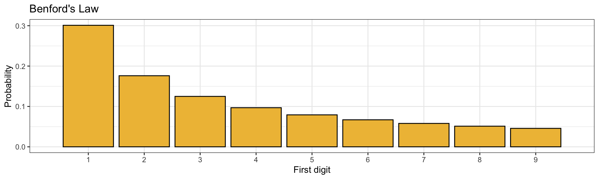
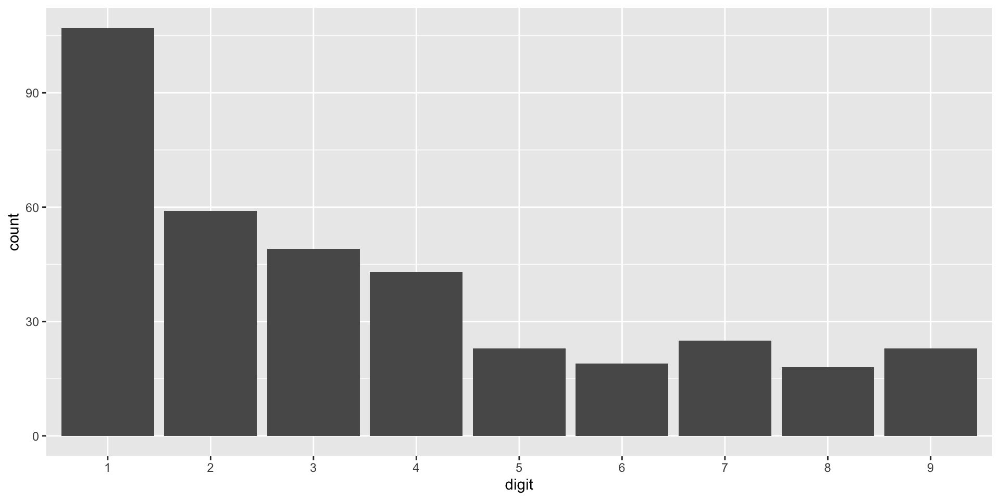
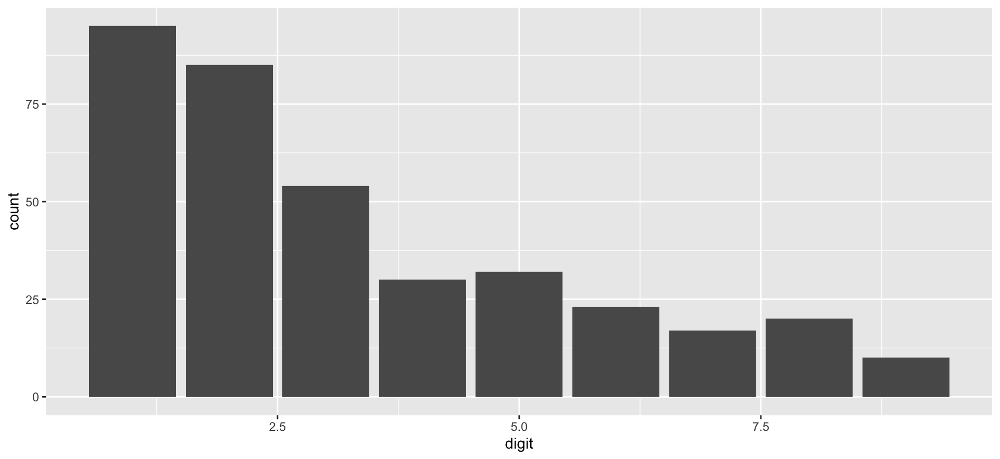
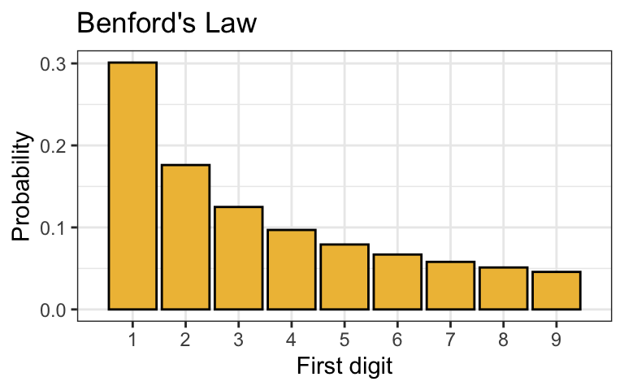
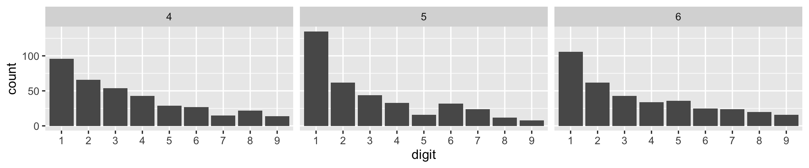
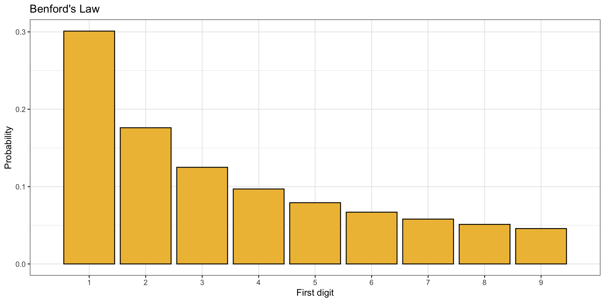
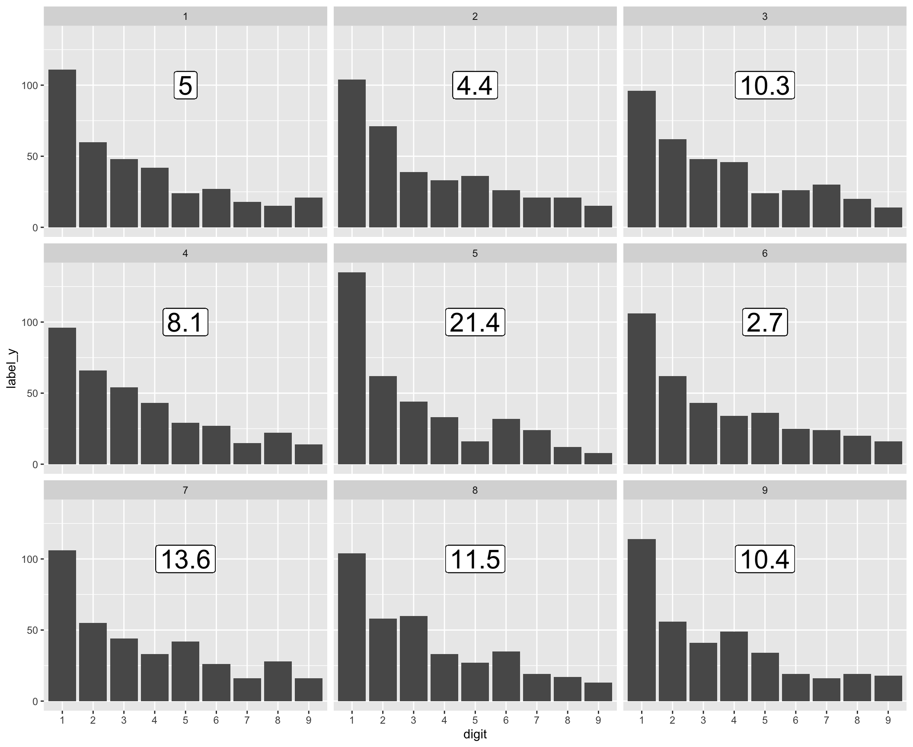
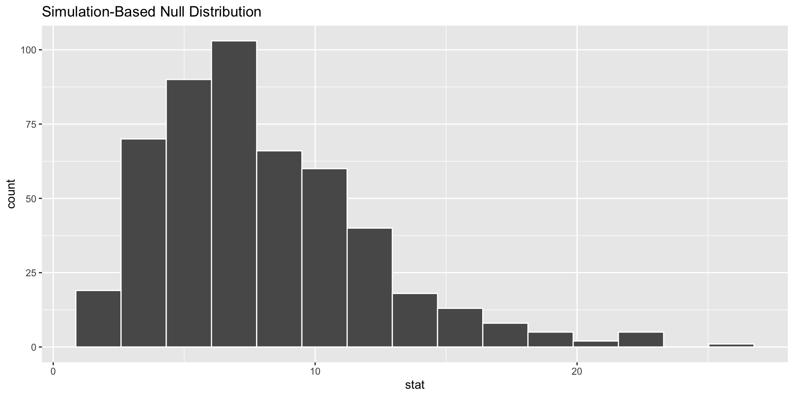
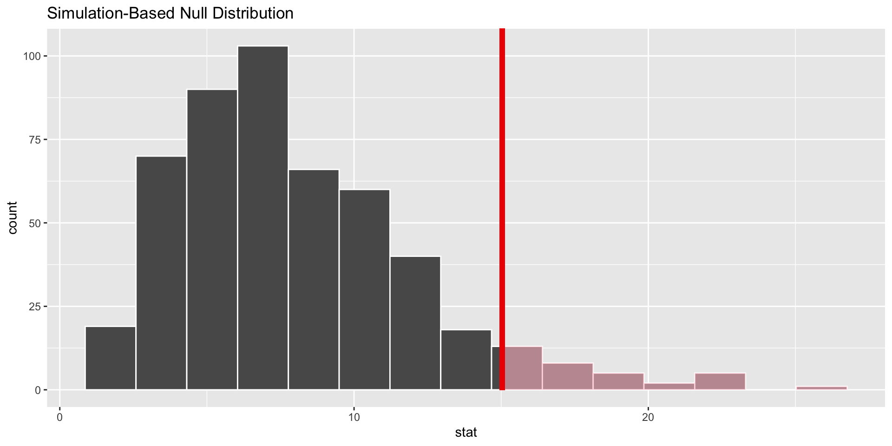

Goodness of Fit
STAT 20 UC Berkeley
Announcements
- Late lab policy
- Small penalty submission by 11 pm
- Larger penalty for submission by next day
Agenda
- Goodness of Fit
- Generating Data from Benford’s Law
- Creating a distance statistic
- Evaluating the evidence
Decision Errors Rates

One goal for today
Learn why we don’t accept the null hypothesis.

Which state did you study? Please type full state name in lower case like “california”.
Benford’s Law
A probability distribution on the digits 1 to 9 that is used to describe the distribution in first digits in collections of numbers that span multiple orders of magnitude (10s, 100s, 1000s, etc).
Theory: If an election is fair, the first digits of the vote counts should follow Benford’s Law.
A Hypothesis Test
In the 2009 presidential election in Iran, there were accusations of fraud by the incumbment, Mahmoud Ahmadinejad. Can we use vote count data to demonstrate fraud?
\(H_0\) First digits follow Benford’s Law
\(H_0\) \(p_1 = .30, p_2 = .18, p_3 = .12, p_4 = .10, p_5 = .08,\)
\(\quad \quad p_6 = .07, p_7 = .06, p_8 = .05, p_9 = .04\)
\(H_A\) First digits don’t follow Benford’s Law
\(H_A\) At least one \(p_i\) is different
Generating data under the null hypothesis
\(H_0\) First digits follow Benford’s Law
\(H_0\) \(p_1 = .30, p_2 = .18, p_3 = .12, p_4 = .10, p_5 = .08,\)
\(\quad \quad p_6 = .07, p_7 = .06, p_8 = .05, p_9 = .04\)
Simulation scheme
- Take one hundred cards and write 1 on 30 of them, 2 on 18 of them, 3 on 12 of them, …, 9 on four of them.
- Shuffle the deck and select 1 card. That represents the first digit in the first city in a data set generated under the null.
- Repeat step 2 \(n\) times to generate a full data set
This will generate a single data set under \(H_0\).
Generating one data set pipeline
First some setup.
Generating one data set pipeline
First some setup.
Generating one data set pipeline
# A tibble: 366 × 10
province city ahmadinejad rezai karrubi mousavi total_votes_cast
<chr> <chr> <int> <int> <int> <int> <int>
1 East Azerbaijan Azar Shahr 37203 453 138 18312 56712
2 East Azerbaijan Asko 32510 481 468 18799 52643
3 East Azerbaijan Ahar 47938 568 173 26220 75500
4 East Azerbaijan Bostan Ab… 38610 281 53 12603 51911
5 East Azerbaijan Bonab 36395 485 190 33695 71389
6 East Azerbaijan Tabriz 435728 9830 3513 419983 876919
7 East Azerbaijan Jalfa 20520 166 74 14340 35295
8 East Azerbaijan Chahar o … 12197 55 46 3975 16375
9 East Azerbaijan Sarab 53196 442 211 17669 72152
10 East Azerbaijan Shabestar 37099 391 126 39182 77459
# … with 356 more rows, and 3 more variables: voided_votes <int>,
# legitimate_votes <int>, digit <dbl>Generating one data set pipeline
Generating one data set pipeline
Generating one data set pipeline
iran %>%
specify(response = digit) %>%
hypothesize(null = "point",
p = ben_prop) %>%
generate(reps = 1,
type = "draw")Response: digit (numeric)
Null Hypothesis: point
# A tibble: 366 × 2
# Groups: replicate [1]
digit replicate
<fct> <fct>
1 2 1
2 5 1
3 3 1
4 1 1
5 4 1
6 9 1
7 5 1
8 3 1
9 6 1
10 1 1
# … with 356 more rowsGenerating one data set pipeline
iran %>%
specify(response = digit) %>%
hypothesize(null = "point",
p = ben_prop) %>%
generate(reps = 1,
type = "draw")Response: digit (numeric)
Null Hypothesis: point
# A tibble: 366 × 2
# Groups: replicate [1]
digit replicate
<fct> <fct>
1 1 1
2 4 1
3 2 1
4 5 1
5 4 1
6 3 1
7 5 1
8 9 1
9 1 1
10 4 1
# … with 356 more rowsGenerating one data set pipeline
Visualizing 9 data sets
Data under \(H_0\)

Observed Data

Does our observed data look similar to what we’d see if first digits followed Benford’s Law?
Creating a distance statistic


Rank these three distributions of data in ascending order of their distance from Benford’s Law.
Creating a distance statistic
Observed Data

Benford’s Law

Desiderata
- Is zero when the proportions are identical
- Grows as the total deviation in proportions grows
- Incorporates distances in both directions
Creating a distance statistic, cont.
iran %>%
group_by(digit) %>%
summarize(obs_prop = n()/nrow(iran)) %>%
mutate(ben_prop = log10(1 + 1/1:9))# A tibble: 9 × 3
digit obs_prop ben_prop
<dbl> <dbl> <dbl>
1 1 0.260 0.301
2 2 0.232 0.176
3 3 0.148 0.125
4 4 0.0820 0.0969
5 5 0.0874 0.0792
6 6 0.0628 0.0669
7 7 0.0464 0.0580
8 8 0.0546 0.0512
9 9 0.0273 0.0458Let \(O_j\) the observed proportion of digit \(j\) in the Iran data and \(E_j\) be proportions we’d expect if Benford’s Law holds.
\[ d = \sum_{j} | E_j - O_j | \]
Creating a distance statistic, cont.
iran %>%
group_by(digit) %>%
summarize(obs_prop = n()/nrow(iran)) %>%
mutate(ben_prop = log10(1 + 1/1:9)) %>%
summarize(d = sum(abs(obs_prop - ben_prop))) # A tibble: 1 × 1
d
<dbl>
1 0.181Let \(O_j\) the observed proportion of digit \(j\) in the Iran data and \(E_j\) be proportions we’d expect if Benford’s Law holds.
\[ d = \sum_{j} | E_j - O_j | \]
This fulfills our desiderata - this will work!
The chi-squared statistic
A standard statistic used with categorical data. Formulated in terms of counts instead of proportions. \(O_j\) is the observed count in category \(j\) and \(E_j\) the expected count when \(H_0\) is true.
\[ \chi^2 = \sum_{j}{\frac{(O_j - E_j)^2}{E_j}} \]
Desiderata
- Is zero when the proportions are identical
- Grows as the total deviation in proportions grows
- Incorporates distances in both directions
- Controls for relative difference per bar
Calculating an observed \(\chi^2\)
Calculating an observed \(\chi^2\)
Calculating an observed \(\chi^2\)
obs_stat <- iran %>%
mutate(digit = factor(digit)) %>%
specify(response = digit) %>%
hypothesize(null = "point",
p = ben_prop) %>%
calculate(stat = "Chisq")
obs_statResponse: digit (factor)
Null Hypothesis: point
# A tibble: 1 × 1
stat
<dbl>
1 15.0Is this \(\chi^2\) large or small?
Calculating 9 simulated \(\chi^2\)
Response: digit (numeric)
Null Hypothesis: point
# A tibble: 9 × 2
replicate stat
<fct> <dbl>
1 1 5.05
2 2 4.43
3 3 10.3
4 4 8.06
5 5 21.4
6 6 2.67
7 7 13.6
8 8 11.5
9 9 10.4 Calculating 9 simulated \(\chi^2\)
Response: digit (numeric)
Null Hypothesis: point
# A tibble: 9 × 2
replicate stat
<fct> <dbl>
1 1 5.05
2 2 4.43
3 3 10.3
4 4 8.06
5 5 21.4
6 6 2.67
7 7 13.6
8 8 11.5
9 9 10.4 
Goodness of Fit pipeline
iran %>%
mutate(digit = factor(digit)) %>%
specify(response = digit) %>%
hypothesize(null = "point",
p = ben_prop) %>%
generate(reps = 500, type = "draw")Response: digit (factor)
Null Hypothesis: point
# A tibble: 183,000 × 2
# Groups: replicate [500]
digit replicate
<fct> <fct>
1 1 1
2 1 1
3 1 1
4 2 1
5 1 1
6 5 1
7 1 1
8 6 1
9 1 1
10 1 1
# … with 182,990 more rowsGoodness of Fit pipeline
null <- iran %>%
mutate(digit = factor(digit)) %>%
specify(response = digit) %>%
hypothesize(null = "point",
p = ben_prop) %>%
generate(reps = 500, type = "draw") %>%
calculate(stat = "Chisq")
nullResponse: digit (factor)
Null Hypothesis: point
# A tibble: 500 × 2
replicate stat
<fct> <dbl>
1 1 9.74
2 2 5.12
3 3 15.1
4 4 7.68
5 5 5.13
6 6 2.96
7 7 10.8
8 8 8.20
9 9 6.11
10 10 9.32
# … with 490 more rowsGoodness of Fit pipeline
Goodness of Fit pipeline
What is your guess at the p-value?
Goodness of Fit pipeline
# A tibble: 1 × 1
p_value
<dbl>
1 0.06Making a decision
- At \(\alpha = .05\), we fail to reject \(H_0\).
- At \(\alpha = .10\), we reject \(H_0\).
Benford’s Law and Elections
The evidence out of Iran is ambiguous, at least as determined by Benford’s Law.
- How did it work out in your state?
- What conclusion should we draw?
There’s no systematic evidence that fair elections have vote counts that follow Benford’s Law, so it’s a flawed approach for detecting fraud.
Type X Error The misapplication or misinterpretation of a hypothesis test to a given problem.